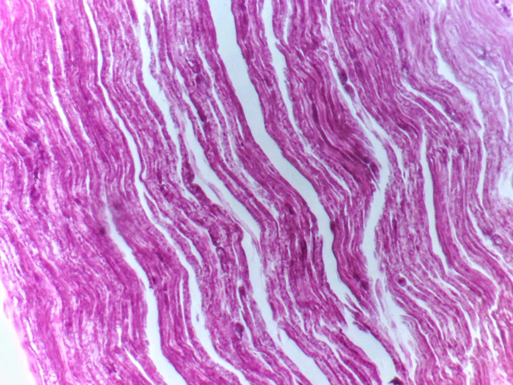
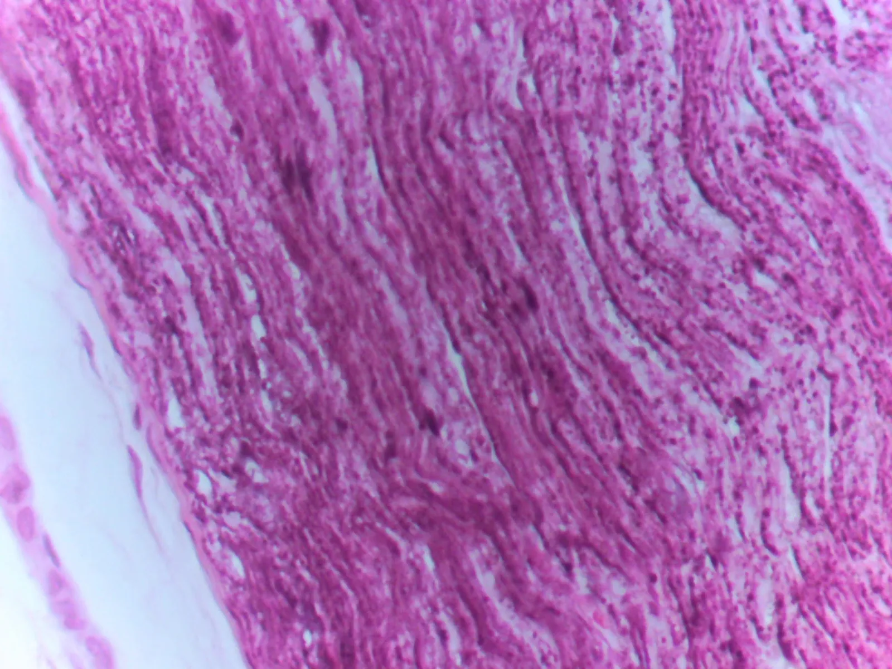

Lâmina 32 · Tecido nervoso
Nervo (corte longitudinal)


Toque na imagem para ampliar. No computador, use as setas do teclado para trocar de imagem.
Lâmina 32 · Tecido nervoso


Toque na imagem para ampliar. No computador, use as setas do teclado para trocar de imagem.